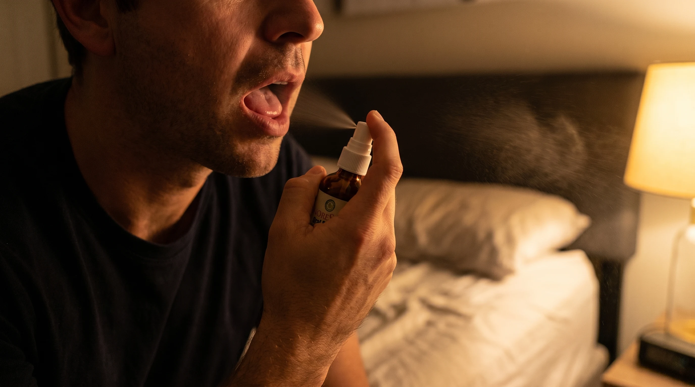
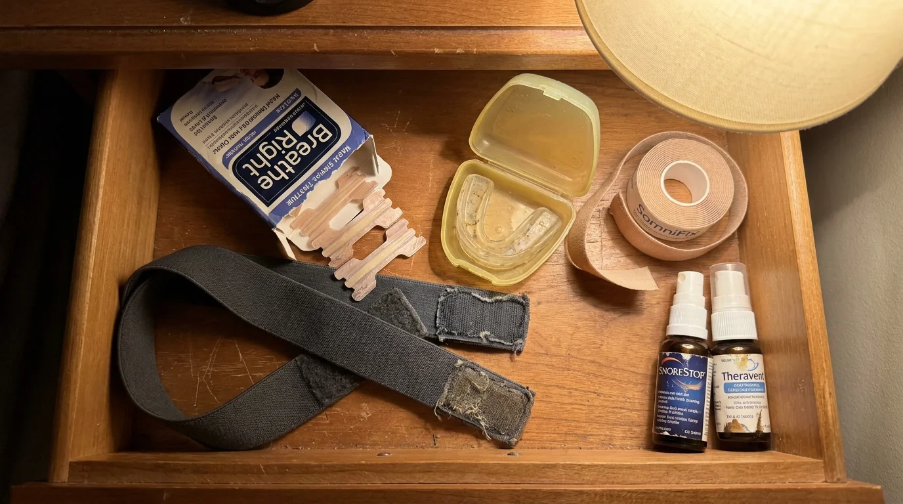
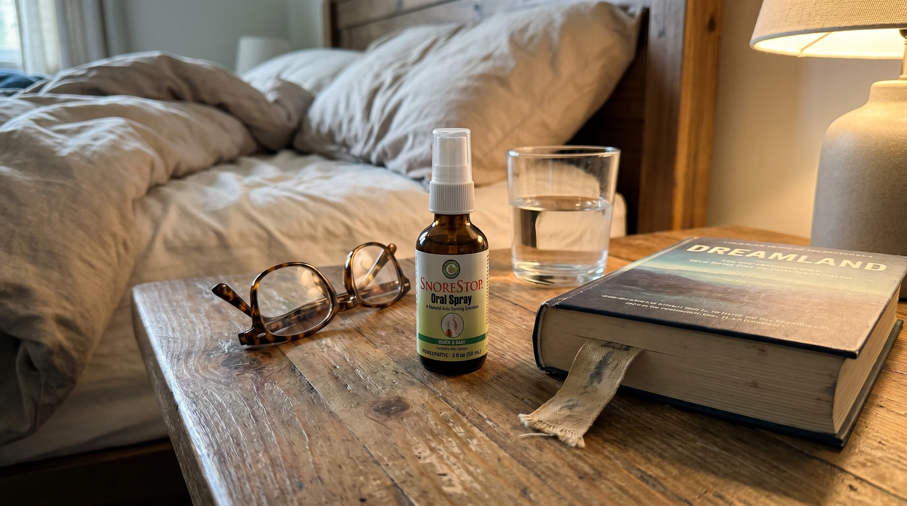

The 2-Second Hack That Fixes Snoring At Its Root (100% Money Back Guarantee)

If you snore, you already know this article isn't about a small problem.
You know because you've watched what it's done to the person sleeping next to you. The dark circles. The sigh at three in the morning. The way they quietly started sleeping in the guest room a year ago, and you told yourself it was temporary. The flinch when your snoring starts again. The silent guilt of being the reason they're not resting.
You know because you wake up exhausted no matter how long you slept. You can't remember the last time you had a sharp, clear morning. At fifty, or fifty-five, or sixty, you've started to wonder if this is just what aging feels like, even though some quiet part of you suspects it's not.
This is the article that explains why none of the solutions you've tried so far have worked, and why a two-second hack before bed has now stopped snoring for over 250,000 chronic snorers in the last month alone. With a guarantee that means you cannot lose any money trying.
If you've made peace with snoring as part of who you are, this article is going to ask you to undo that peace. Because it doesn't have to be.
What Your Snoring Has Actually Cost You
Most chronic snorers think of snoring as a noise problem. A nuisance. A running joke at family dinners. Something to apologize for in hotel rooms.
It's not a noise problem.
Every time your throat vibrates during sleep, it's putting mechanical stress on your carotid arteries, the major vessels carrying oxygenated blood to your brain. That stress, occurring hundreds of times a minute across thousands of nights, has been linked in published research to thickening of the artery walls, an early warning sign of stroke. Every micro-arousal your body has when the airway briefly collapses releases a small surge of stress hormones. Your blood pressure spikes. Your heart rate climbs. The body returns to baseline within seconds, but the spike happened. And it happens hundreds of times a night.
Your brain isn't getting full repair cycles either. The two o'clock fatigue you've been blaming on your job? It's the cumulative cost of a brain that hasn't completed deep sleep properly in years. The mood swings. The slower word recall. The way you snap at your kids more easily than you used to. None of that is age. It's sleep fragmentation, and it's been compounding for as long as you've been snoring.
And then there's your partner.
Your partner has been paying a cost you cannot measure. The lost sleep is just the beginning. The resentment that builds quietly when you wake up rested and they don't. The way they stop reaching for you at night because they're bracing for the noise. The slow erosion of intimacy that nobody talks about because nobody wants to admit a sound is doing this to a marriage.
You've made peace with snoring. They haven't. They've just stopped saying it out loud.
"You've made peace with snoring. They haven't. They've just stopped saying it out loud."
Why Nothing You've Tried Has Worked
You've tried things. Probably a lot of things. Maybe nasal strips. Maybe mouth tape. Maybe a custom mouthguard that cost two thousand dollars and gave you jaw pain. Maybe a CPAP that's been in the closet for nine months because you couldn't stand the mask. Maybe surgery that didn't work and left you with a scar.
Every single one of those failed for the same reason. They were all targeting the wrong part of your body.
Snoring is not a nose problem. It is not a jaw problem. It is a throat problem.
The vibration that creates the noise comes from inflamed soft tissue at the back of your throat. When you fall asleep, that tissue swells, accumulates a small amount of mucus, and partially collapses inward. Air pushes through the narrowed passage and the tissue vibrates hundreds of times per minute. That vibration is the snore.
Now look at what you've tried. Nasal strips open your nostrils. Your throat is still vibrating. Mouth tape closes your mouth. Your throat is still vibrating. Mouthguards pull your jaw forward. Your throat is still vibrating. CPAP machines force air down your airway, but the throat tissue is still inflamed. They all fail for the same reason. None of them touch the actual source of the noise.
This is why you're still snoring after spending thousands of dollars. Not because you're a hopeless case. Because every product on the market has been pointed at the wrong part of your body for the past forty years.

The 2-Second Hack
The hack is two sprays of a small natural oral spray called SnoreStop. One under the tongue. One at the back of the throat. Right before bed. Two seconds, total.
That's it. That's the whole thing.
The reason it works when nothing else has is that it's the only widely available product that goes directly to the actual source of the noise. The spray applies right where the vibration is happening, calms the inflamed tissue, clears the mucus, and helps the soft tissue keep its shape during sleep. The airway stays open. The vibration stops. The noise stops.
That's the entire mechanism. There's no mystery to it once you understand where the noise actually comes from.
Most people see a measurable change on the first night. By the end of the first week, the snoring is either gone or significantly quieter. By night fourteen, almost everyone who used it consistently has stopped snoring entirely.
The bottle lasts about thirty nights. The price is under fifty dollars. There is no prescription, no doctor visit, no fitting, no machine. Just two sprays before bed.

What Happens In The First 30 Days
This is the part most people don't believe until they live it.
Night one. You spray. You go to sleep. You wake up. Your partner is looking at you differently. They don't say anything. They're trying to figure out if it was a fluke.
Night three. They tell you, with a small careful smile, that they didn't wake up once. They've been waking up four to six times a night for years.
Night seven. You wake up clear-headed for the first time you can remember. The two o'clock fatigue doesn't show up the next day. Your partner makes coffee and stands a little closer to you than they have in months.
Night fourteen. They've moved back into the bed if they had been sleeping somewhere else. They don't tell you why. You don't ask.
Night thirty. You go in for a routine physical. Your blood pressure is the lowest it's been in five years. The doctor asks what's changed. You don't quite know what to say.
That's the arc most chronic snorers go through on this product. It's not dramatic. It happens quietly. Most people don't realize how much was wrong until it stops being wrong.
What People Say After They Try It
These are unsolicited reviews from people who tried the spray and stopped snoring. We have not edited them. They were submitted directly by verified buyers.
"I cannot believe this is real. Two sprays before bed. That's it. After three nights my wife stopped sleeping with earplugs. After a week she said the bedroom is quieter than it has been in twenty years. I lay there the first night listening to her breathe in the dark and I cried. I had not realized how loud I had been until everything was quiet."
"I have spent thousands on mouthguards over the years. I was so sure this would not work that I almost didn't bother trying it. I tried it. It worked. I'm angry at every other product I have ever bought. I'm angry that I waited fifteen years to try a fifty dollar bottle. But mostly I am grateful that my husband is sleeping again."
"Two seconds before bed. That is the whole thing. After thirty years of snoring I am the family ex-snorer now. My wife recorded me sleeping on night nine just to confirm she was not imagining it. Total silence on the recording. I was sixty-one years old listening to a recording of myself not snoring for the first time in my adult life. I do not know how to explain what that did to me."
"Took me longer to open the box than to use the product. Six nights in, my partner slept through the entire night for the first time in two years. We had not realized she had stopped reaching for me in her sleep. She started again. Best fifty dollars I have ever spent."
"My wife had been sleeping in our daughter's old bedroom for nineteen months. She moved back into our bed on night six of using SnoreStop. We had stopped touching each other in the morning because she had stopped being there. She is back."
Why You Should Try It Tonight
Here is the part that closes the gap. SnoreStop comes with a thirty-day money-back guarantee. You order one bottle. You use it for thirty nights. If your snoring does not improve, you email the company. They refund you in full. No paperwork, no return shipping, no phone calls, no negotiation.
You either get your sleep back, or you get every dollar back. There is no third outcome.
The cost of finding out is, mathematically, zero. The cost of waiting another year, in fragmented sleep, in the silent damage to your cardiovascular system, in the quiet damage to your relationship, is not.
You can stop this tonight. The bottle ships in twenty-four hours. The hack takes two seconds.
🟢 The SnoreStop 30-Day Guarantee
"Either it works or it's completely free. Two outcomes only. Your sleep returns, or your money does."
Every bottle is backed by a full thirty-day money-back guarantee. If your snoring does not improve, contact the company. No forms. No return shipping. No phone calls. Full refund.
One Last Thing
The 250,000 people who ordered this last month all sat where you are sitting right now. They had tried other things. They had been burned. They were tired of trying. They almost did not order.
They ordered.
Most of them are sleeping next to their partners again. Most of them woke up clear-headed this morning. Most of them did not realize how heavy the weight was until it came off.
Your turn.